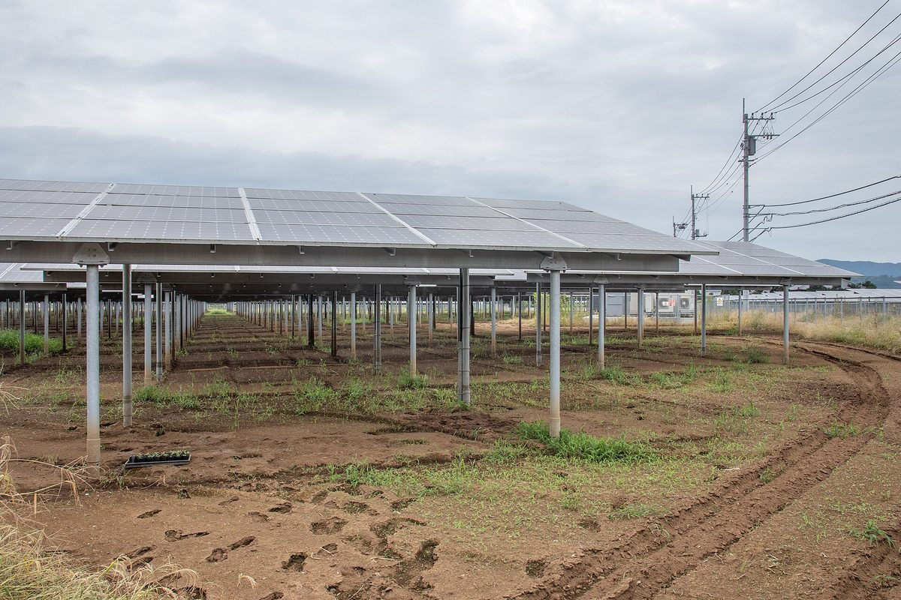

김승남 광주도시공사 사장, 영농형 태양광 이익 공유 이끌 독립 에너지공사 설립 촉구…전남개발공사 안 재생에너지 수익 비중 1.2% 들어

기고에서 '전남광주에너지공사' 조속 출범 주장…발전지구 기획·글로벌 기업 직접 전력구매계약 맡을 공공 사령탑 필요, 초기 재정자립도로만 판단 말아야
김승남 광주도시공사 사장은 기고에서 영농형 태양광 시대를 앞두고 지역민과 이익을 나눌 공공 사령탑으로 독립된 '전남광주에너지공사'를 서둘러 세워야 한다고 주장했다. 김 사장은 시행을 앞둔 영농형 태양광법이 농업진흥구역이라도 지자체장이 발전지구로 지정하면 예외적으로 태양광 설치를 허용하는 만큼, 공공이 주도해 이익을 나누고 이른바 '에너지 소득의 양극화'를 막아야 한다고 밝혔고, 외부 투기자본을 막으려고 사업 주체를 주민과 실제 경작자 중심의 협동조합으로 제한하는 시행세칙이 마련되고 있다고 설명했다. 그는 전남광주통합특별시가 추진하는 서남권 반도체 클러스터에 대형 원전(APR1400) 7~8기 규모인 10GW 안팎의 전력이 늘 필요하다며, 기후솔루션 분석으로 전국 광역단체 가운데 1위인 이 지역의 태양광 잠재량 69.5GW를 영농형 태양광으로 활용하자고 제안했다. 김 사장에 따르면 현재 전남개발공사 안에서 재생에너지 사업이 차지하는 수익 비중은 1.2%에 그쳐, 기존 공사의 한 부서로 두면 에너지 사업이 우선순위에서 밀린다는 것이며, 그는 에너지공사 설립을 초기 재정자립도라는 잣대만으로 판단해서는 안 된다고 강조했다. 김 사장은 새 공사가 지자체와 함께 발전지구를 기획하고 생산한 전기를 글로벌 기업과의 직접 전력구매계약(PPA)으로 잇는 일을 맡아야 하며, 도시개발은 30년간 이 일을 해 온 광주도시공사가 맡으면 된다고 주장했다. 글에는 전남광주통합특별시나 전남개발공사의 입장, 공사 설립 시점은 담기지 않았다.
시민에너지 관점
사업 주체를 주민·경작자 협동조합으로 묶어 두면서 동시에 공공 사령탑을 세우자는 제안은, 협동조합이 혼자 감당하기 어려운 발전지구 기획과 계통 연결, 대규모 전력구매계약을 공공이 맡아 주자는 뜻으로 읽힌다. 미국 네브래스카주는 주 전체 전기를 이윤을 남기는 민간 전력회사 없이 공공전력 기관이 맡는 유일한 주로, 공공이 전력 사업의 중심에 서는 방식이 오래 작동할 수 있음을 보여 준다. 그래도 공사가 들어서면 주민 협동조합은 들러리가 되고 공공이 몫을 가져간다는 우려가 나올 수 있는 만큼, 공사 정관과 발전지구 지정 기준에 협동조합 지분 비율과 이익 공유 규칙을 처음부터 적어 둬야 공사가 주민 몫을 대신 갖는 곳이 아니라 협동조합의 부족한 자기자본을 메워 주는 곳이 된다. 전남광주에너지공사를 논의한다면 설립 여부만이 아니라 주민 협동조합의 지분과 의결권을 어떻게 보장할지를 설립 조례 단계에서 함께 정해야 한다.
출처: 광주일보 2026-10-29 김승남(기고, 광주도시공사 사장) 원문 보기
光州都市公社のキム・スンナム社長、営農型太陽光の利益共有を担う独立エネルギー公社の設立を訴え…全南開発公社内の再エネ収益比率は1.2%と指摘
寄稿で「全南光州エネルギー公社」の早期発足を主張…発電地区の企画やグローバル企業との直接電力購入契約を担う公的司令塔が必要、初期の財政自立度だけで判断すべきでないと
韓国・光州都市公社のキム・スンナム社長は寄稿で、営農型太陽光の時代を前に、地域住民と利益を分かち合う公的な司令塔として独立した「全南光州エネルギー公社」を急ぎ設立すべきだと主張した。キム社長は、施行を控えた営農型太陽光法が、農業振興区域であっても自治体の長が発電地区に指定すれば例外的に太陽光の設置を認めることから、公共が主導して利益を分配し、いわゆる「エネルギー所得の二極化」を防ぐべきだと述べ、外部の投機資本を防ぐため事業主体を住民と実際の耕作者を中心とする協同組合に限る施行細則が整備されつつあると説明した。また、全南光州統合特別市が進める西南圏半導体クラスターには大型原発（APR1400）7〜8基分にあたる10GW前後の電力が常時必要だとして、気候ソリューション（Solutions for Our Climate）の分析で全国の広域自治体中1位とされるこの地域の太陽光ポテンシャル69.5GWを営農型太陽光で生かそうと提案した。キム社長によると、現在、全南開発公社の中で再生可能エネルギー事業が占める収益比率は1.2%にとどまり、既存公社の一部署のままではエネルギー事業が後回しになるとして、エネルギー公社の設立を初期の財政自立度という物差しだけで判断してはならないと強調した。キム社長は、新たな公社が自治体とともに発電地区を企画し、つくった電気をグローバル企業との直接電力購入契約（PPA）につなぐ役割を担うべきで、都市開発は30年にわたりこの仕事をしてきた光州都市公社が担えばよいと主張した。寄稿には、全南光州統合特別市や全南開発公社の立場、公社の設立時期は示されていない。
市民エネルギーの視点
事業主体を住民・耕作者の協同組合に限りつつ公的な司令塔を設けようという提案は、協同組合だけでは担いきれない発電地区の企画や系統接続、大規模な電力購入契約を公共が引き受けようという趣旨と読める。米国ネブラスカ州は、利益を上げる民間電力会社なしに州全体の電気を公営電力機関が担う唯一の州であり、公共が電力事業の中心に立つ仕組みが長く機能しうることを示している。それでも公社ができれば住民の協同組合は脇役になり、公共が取り分を持っていくとの懸念が出かねない以上、公社の定款と発電地区の指定基準に協同組合の持ち分比率と利益共有のルールを最初から書き込んでこそ、公社は住民の取り分を代わりに握る存在ではなく、協同組合に足りない自己資本を補う存在になる。全南光州エネルギー公社を議論するなら、設立の是非だけでなく、住民協同組合の持ち分と議決権をどう保障するかを設立条例の段階で併せて決めるべきだ。
出典: 光州日報 2026-10-29 キム・スンナム（寄稿、光州都市公社社長） 原文を読む
韩国光州都市公社社长Kim Seung-nam呼吁设立独立能源公社主导农光互补收益共享…指出全南开发公社内可再生能源收益占比仅1.2%
在投稿中主张尽快成立"全南光州能源公社"…需要负责规划发电园区、与跨国企业直接签订购电协议的公共指挥部，不应只以初期财政自给率来判断
韩国光州都市公社社长Kim Seung-nam在投稿中主张，在农光互补时代到来之前，应尽快设立独立的"全南光州能源公社"，作为与当地居民分享收益的公共指挥部。他表示，即将施行的农光互补法规定，即使是农业振兴区域，只要地方政府首长指定为发电园区，也可例外地安装光伏，因此应由公共部门主导分配收益，防止所谓"能源收入两极化"；他还介绍说，为阻止外部投机资本，正在制定把项目主体限定为以当地居民和实际耕作者为中心的合作社的实施细则。他提出，全南光州统合特别市推进的西南圈半导体集群常年需要约10GW的电力，相当于7至8座大型核电机组（APR1400），因此应通过农光互补利用该地区69.5GW的光伏潜力——据韩国智库Solutions for Our Climate分析，这一数字在全国广域地方政府中居首。据Kim Seung-nam介绍，目前可再生能源业务在全南开发公社内的收益占比只有1.2%，若仍作为现有公社的一个部门，能源业务就会被排在后面，他强调不应只用初期财政自给率这一尺度来判断能源公社的设立。他主张，新公社应与地方政府一起规划发电园区，并把所发电力通过与跨国企业的直接购电协议（PPA）对接，城市开发则交给30年来一直从事这项工作的光州都市公社。文中没有提及全南光州统合特别市或全南开发公社的立场，也没有提到公社的设立时间。
市民能源视角
一边把项目主体限定为居民和耕作者合作社，一边主张设立公共指挥部，这一提议可以理解为：由公共部门承担合作社难以独自完成的发电园区规划、并网和大规模购电协议。美国内布拉斯加州是唯一一个没有营利性民营电力公司、全州电力都由公共电力机构负责的州，说明以公共部门为中心的电力事业模式可以长期运转。不过，公社一旦成立，居民合作社可能沦为陪衬、收益被公共部门拿走，这种担忧难以避免，因此只有在公社章程和发电园区指定标准中从一开始就写明合作社的持股比例和收益共享规则，公社才不会替居民拿走他们的份额，而是成为弥补合作社自有资本不足的力量。如果要讨论全南光州能源公社，就不能只讨论设与不设，还应在制定设立条例时一并确定如何保障居民合作社的股份和表决权。
来源: 光州日报 2026-10-29 Kim Seung-nam（投稿，光州都市公社社长） 查看原文
Gwangju Urban Corporation CEO Kim Seung-nam calls for an independent energy corporation to lead profit-sharing from agrivoltaics, citing a 1.2% renewables revenue share at Jeonnam Development Corporation
In a contributed column he urges the swift launch of a "Jeonnam-Gwangju Energy Corporation" as a public control tower to plan generation zones and sign direct power purchase agreements with global companies, saying it should not be judged on early financial self-sufficiency alone
Kim Seung-nam, chief executive of the Gwangju Metropolitan Development Corporation, argued in a contributed column that an independent "Jeonnam-Gwangju Energy Corporation" should be set up quickly as a public control tower to share the gains of agrivoltaics with local people. Kim said that because the agrivoltaics act about to take effect will allow solar panels even in agricultural promotion zones once a local government head designates them as generation zones, the public sector should lead the way in distributing the profits and preventing what he called "polarisation of energy income", and he noted that implementing rules are being drafted to limit project developers to cooperatives centred on local residents and working farmers in order to keep out speculative outside capital. He said the southwestern semiconductor cluster being pursued by the Jeonnam-Gwangju Integrated Special City will constantly need around 10GW of power, the equivalent of seven to eight large APR1400 nuclear reactors, and proposed tapping the region's 69.5GW of solar potential, ranked first among Korea's provincial-level governments in an analysis by Solutions for Our Climate, through agrivoltaics. According to Kim, renewable energy currently accounts for only 1.2% of revenue at the Jeonnam Development Corporation, so energy would keep slipping down the priority list if it stayed a department of an existing corporation, and he stressed that the case for an energy corporation should not be judged solely by its early financial self-sufficiency. Kim argued that the new corporation should plan generation zones with local governments and link the power they produce to global companies through direct power purchase agreements (PPAs), while urban development could stay with the Gwangju corporation, which has done that work for 30 years. The column does not set out the positions of the integrated special city or the Jeonnam Development Corporation, nor any timetable for setting up the corporation.
Citizen Energy View
A proposal that limits developers to residents' and farmers' cooperatives while also creating a public control tower reads as a call for the public sector to take on what cooperatives cannot manage alone: planning generation zones, securing grid connections and negotiating large power purchase agreements. Nebraska is the only US state where all electricity is supplied by public power entities rather than profit-making private utilities, a sign that a public-centred power sector can work over the long term. Still, there is a real worry that once a corporation exists, residents' cooperatives become bit players and the public body takes their share, so only if the corporation's articles and the criteria for designating generation zones spell out cooperative ownership ratios and profit-sharing rules from the start will it become a body that fills the cooperatives' equity gap rather than one that holds residents' share on their behalf. If a Jeonnam-Gwangju Energy Corporation is debated, the question should be not only whether to create it but how the founding ordinance will guarantee residents' cooperatives their stakes and voting rights.
Source: Kwangju Ilbo 2026-10-29 Kim Seung-nam (contributed column; CEO, Gwangju Metropolitan Development Corporation) Read the original